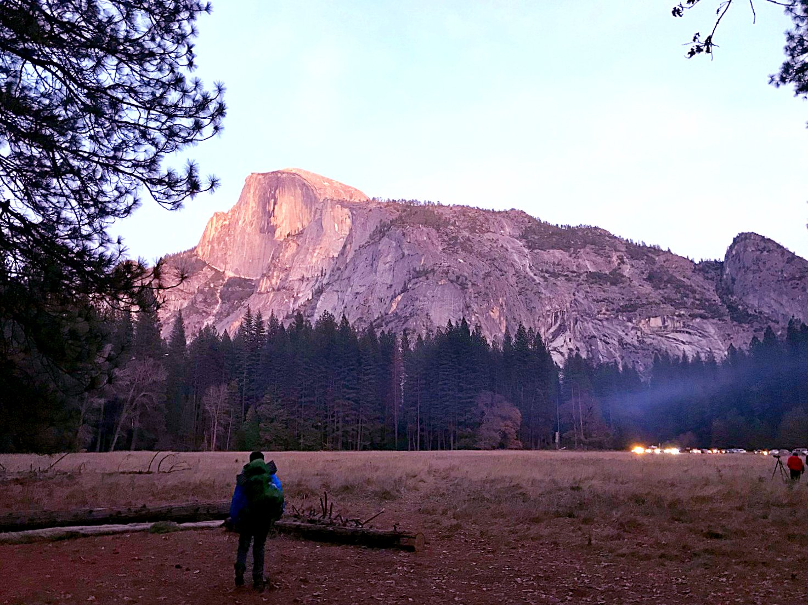

Yosemite - Christmas 2017
Highly encourage you guys to check out the video Daniel made for this trip! It's really nice and super super funny. Nice because Daniel made it, funny because Jeffery and I are in it. linkTook the amtrak to Yosemite to hang around the valley for a couple of days. Participants: myself, Jeffery Ou, and Daniel Lin. Jeffery had done this once with me in June, now it was Daniel's turn!
{kind=link}
We headed out from San Jose Diridon at 6 in the morning by bus and took the train from Stockton to Merced, then the bus (YARTS) from Merced to the valley. Travel took up the entire day!
{kind=link}
Eating in Merced

{kind=link}
Arriving in the valley! Worn out and frazzled but still amazed as always
{kind=link}
North Dome (Daniel was up there in Sept.)

{kind=link}
The beautiful view from our "campsite" near Curry village
{kind=link}
Hidden tent.
After setting up camp, we spent the evening in the Curry Village lounge. The pasttime for that day was trying to film people who weren't able to open the door to get outside. (You have to turn the doorknob counterclockwise while not pushing outwards!)
{kind=link}
Having some fun at night photographing stars (ignore blurry)
{kind=link}
Hello sunrise!
{kind=link}
Breakfast in curry village
We ended up messing up the stove. First we tried to go the wilderness center to see if they knew why it broke. Then we came back to the mountain-gear shop and asked for a instructions manual from one of their stoves. The issue was actually a clog in the pump. I used some of my handy physics knowledge and astutely observed the incompressibility of water. We filled the piston with water to try and force out the clog. I pushed as hard as I could, and the clog wouldn't release. I pushed even harder, and everything---water, pump valves, parts---all shot out. We spent half an hour crawling the floor to find the missing part. We found it! The stove was fixed.
{kind=link}
On our way to the village side of the valley
{kind=link}
Searching...
{kind=link}
What a luxury!
So we didn't have much daylight after spending so much time trying to fix the stuff. We made our way to our next campsite, which was a small spot next to the Merced river that I had visited a couple years prior. It was right next to Northside road, and it had a view of Half Dome partially obscured.
{kind=link}
I forget what shenanigans we were up to that night...
{kind=link}
Nothing like listening to my dragonfly rumbling at night
{kind=link}
It's never pretty waking up to your sleeping bags like this (no tent)
{kind=link}
But it's always pretty waking up to this kind of stuff
{kind=link}
First hints of color
{kind=link}
Like sardines in a can (or spoons in a kitchen drawer)
{kind=link}
I liked the light illuminating the quarter domes to the left of Half Dome
{kind=link}
Too cold to even move
{kind=link}
Enjoying the view
The plan for that day was making our way to Tunnel View. It was a casual day and pretty fun! First we hiked to the base of El Capitan to eat lunch. Daniel and I went a little further and climbed up to the base of the Dawn Wall route (the one climbed by Caldwell and Jorgeson). It was pretty exposed for us non-rock climbers!

all Jeffery's idea
{kind=link}
very cute, jeffery!
{kind=link}
long pants were a mistake... I never wore long pants again
{kind=link}
Did we accidentally feed Jeffery something wrong that morning?
{kind=link}
Daniel and El Cap
{kind=link}
El Cappppp
{kind=link}
Daniel's free solo
{kind=link}
The bolt I'm holding onto is actually the start of the Dawn Wall, which I didn't know at the time
{kind=link}
the view
{kind=link}
Careful daniel!
After our fun time at the base of El Cap, we had to head on over to Tunnel View quickly to get there in time for the famous tunnel view sunset! We speed hiked for like 2 hours.
{kind=link}
Valley View
{kind=link}
Daniel and Valley View
{kind=link}
Made it to Tunnel view!
{kind=link}
{kind=link}
Definitely fed Jeffery something wrong
{kind=link}
Yep
That night we had nowhere to sleep, so we slept behind a bunch of trash cans in the parking lot. The early sunsets meant that we were hanging about in the dark for a really long time.
Here's an interesting story: we were sitting quietly in our "campsite" when all of a sudden a car parks right next to us. The headlights shut off and the man inside walks towards us. So at this point we're so scared, and we have no idea what's going on, so we're frozen in our seats. Suddenly, the man stops in his tracks just ten feet away from us, and for what seems like an eternity, nobody makes a sound. We're pretty much scared shitless at this point. Suddenly, we hear a quiet rustling noise coming from the man's direction, and we're all straining to listen and hear what it is. When the rustling sound doesn't stop, it dawns on us. The man never even SAW us. HE WAS PEEING!!! There he was, ten feet away from us in the pitch dark, totally oblivious to the fact that there were three boys sitting right in front of him, and he was just there doing his business. At this point, we were so overcome with laughter we were shaking with our hands clapped over our mouths. When he finally got back in his car and drove away, we all had a nice laugh about it.
{kind=link}
Not too shabby
{kind=link}
Hello sunrise!
{kind=link}
Daylight view
After we packed up our stuff the next morning, we needed to make our way back to Curry Village before afternoon to catch our bus. We decided to hitchhike back down to the valley, so Daniel approached a kind Chinese man who was packing up his camera gear and asked him for a ride down, which he happily agreed to. (Interestingly, by some extraordinary chance, this man turned out to be a friend of my mom's, which was a fact I gradually began to suspect after he told us a little about himself. I confirmed after the trip with my mom.)
Since we had a couple hours on hand, we checked out Mirror lake, which was frozen on the surface.
{kind=link}
Ice patterns
{kind=link}
Daniel out exploring
{kind=link}
Me out exploring
{kind=link}
A lot closer to half dome this time!
Eventually we had to go back home! It was a fun trip. Lots of late night talks (the nights were sooooo long) and a great fun time.
{kind=link}
all smiles from Jeffery

tired.